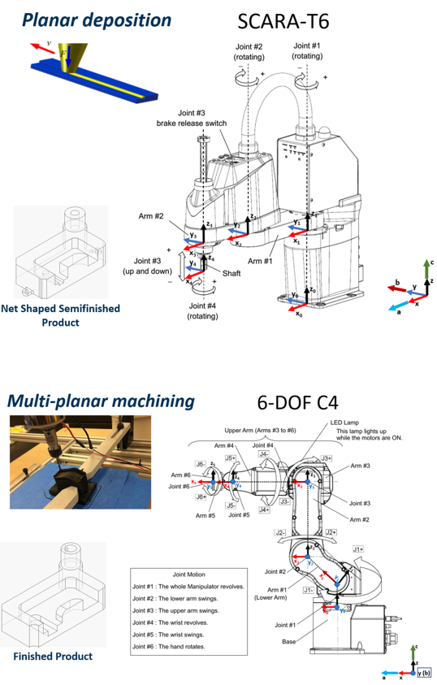
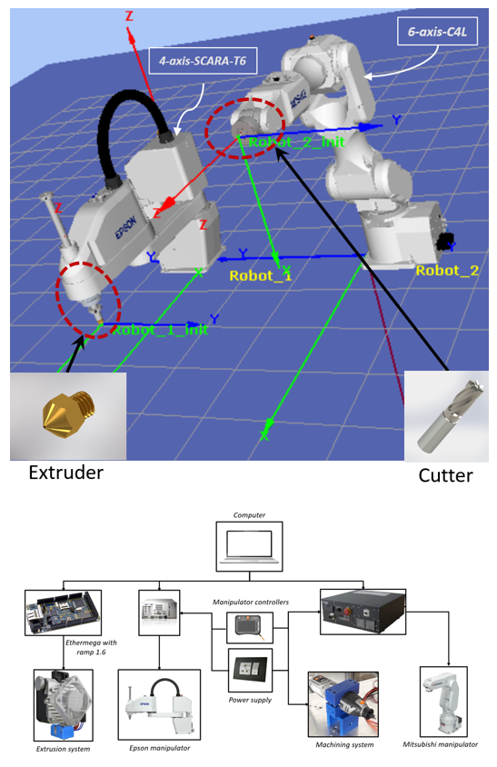
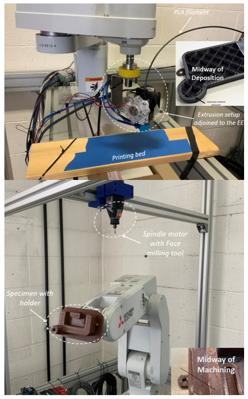
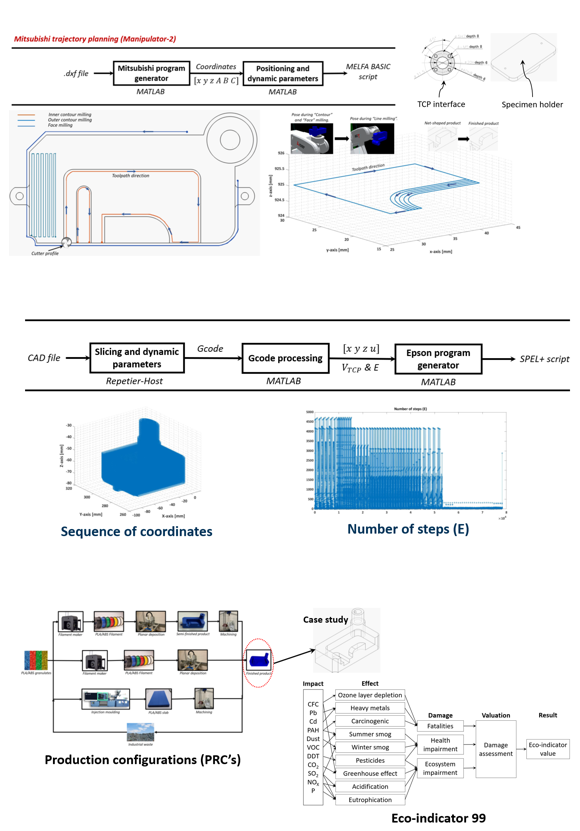

<div id="portfolio-page" class="portfolio-page-content">
    <div class="container">
        <div class="portfolio-nav">
            <div id="portfolio-close-button" class="portfolio-close-button">
                <a href="#portfolio"><i class="fa fa-close"></i></a>
            </div>
        </div>

        <div class="portfolio-title">
            <h1>Portfolio Project</h1>
        </div>

        <div class="row">
            <div class="col-sm-5 col-md-5 portfolio-block">
                <div class="owl-carousel portfolio-page-carousel">
                    <div class="item">
                        
                    </div>
                    <div class="item">
                        
                    </div>
                    <div class="item">
                        
                    </div>
                    <div class="item">
                        
                    </div>

                </div>

                <div class="portfolio-page-video embed-responsive embed-responsive-16by9">
                    <iframe width="560" height="315" src="https://www.youtube-nocookie.com/embed/vzYrmRjVKdU" frameborder="0" allowfullscreen></iframe>
                </iframe>
                </div>

                <!--
                <div class="portfolio-page-image">
                    
                </div>
                -->

                <script type="text/javascript">
                    jQuery(document).ready(function($){
                        $('.portfolio-page-carousel').owlCarousel({
                            smartSpeed:1200,
                            items: 1,
                            loop: true,
                            dots: true,
                            nav: true,
                            navText: false,
                            margin: 10
                        });
                    }); 
                </script>
            </div>

            <div class="col-sm-7 col-md-7 portfolio-block">
                <!-- Project Description -->
                <div class="block-title">
                    <h3>Development of Hybrid Manufacturing Cell with Industrial Robotic Manipulators</h3>
                </div>
                <ul class="project-general-info">
                    <li><p><i class="fa fa-user"></i>Development of Hybrid Manufacturing Cell with Industrial Robotic Manipulators</p></li>
                    <li><p><i class="fa fa-globe"></i> <a href="https://www.politesi.polimi.it/handle/10589/175092" target="_blank">https://www.politesi.polimi.it/browse?type=author</a></p></li>
                    <li><p><i class="fa fa-calendar"></i> May 2020 - Feb 2021</p></li>
                </ul>

                <p class="text-justify">From the last two decades, research and development for integration of the “Machining” process with “Additive manufacturing” systems have consistently increased
                    due to the emergence of enhanced capabilities for these manufacturing cells and they are referred to as “Hybrid Manufacturing Cells” which is utilised to overcome
                    limitations of the employed manufacturing processes through a fusion of “Process planning”. By considering this rationality into account, in this work “Industrial
                    Robotic manipulators” (IRMs) are integrated with “Fused deposition modelling” (FDM) and “Machining” systems to form a “Hybrid manufacturing cell” (HMC).
                    The main objective is a comprehensive understanding of the enhanced capabilities of the developed HMC configuration. Initially, process planning for manufacturing
                    a defined product has been defined by taking into consideration the “Collision avoidance approach” since both the IRMs are operating in a shared workspace and then
                    the emerging capabilities of the developed HMC have been studied on the virtual environment by definitive “Case studies” during which, a developed “Automatic
                    Trajectory Generation” algorithm for “Planar deposition” of the material has been employed to further minimise the computational effort for building complex
                    products. After validating these capabilities of the HMC cost-effectively, the developed HMC has been realised by taking into account the selection of components
                    on a system level. i.e. criteria for the selection of “Extrusion system” and “Machining system” has been developed by imposing a set of HMC constraints as
                    criteria. Upon construction completion of the selected HMC in the laboratory, a “Case study” has been defined to illustrate a cluster of characteristics of the HMC
                    and experimented. Finally, with the selected configuration for HMC a defined product is built in three reasonable production configurations and the corresponding
                    environmental impact for each of these production configurations has been quantitatively investigated and in this way, I have demonstrated the precedence of the
                    developed state of the art HMC over other conventional manufacturing cells.
                    In conclusion, we have compiled this work into several Scientific articles by highlighting the importance of the Novel Experimental setup not only in terms of Precedence Manufacturing but also in terms of its effect on the Environment.</p>
                <!-- /Project Description -->

                <!-- Technology -->
                <div class="tags-block">
                    <div class="block-title">
                        <h3>Keywords</h3>
                    </div>
                    <ul class="tags">
                        <li><a>Hybrid Manufacturing Cell</a></li>
                        <li><a>Industrial Robotic Manipulators</a></li>
                        <li><a>Fused Deposition Modelling</a></li>
                        <li><a>Machining</a></li>
                        <li><a>Motion Planning</a></li>
                        <li><a>Homogeneous Transformation Matrix</a></li>
                        <li><a>Big Data Parsing</a></li>
                        <li><a>Electric Motor Sizing</a></li>
                        <li><a>Automatic Trajectory Generation/a></li>
                        <li><a>Life Cycle Assessment</a></li>
                        <li><a>Algorithms</a></li>
                        <li><a>Environmental-sustainability</a></li>
                    </ul>
                </div>
                <!-- /Technology -->

                <!-- Share Buttons -->
                <!-- <div class="btn-group share-buttons">
                    <div class="block-title">
                        <h3>Share</h3>
                    </div>
                    <a href="https://www.facebook.com/sharer/sharer.php?u=link_to_be_shared" ><i class="fa fa-linkedin"></i> </a>
                    <a href="#" target="_blank" class="btn"><i class="fa fa-facebook"></i> </a>
                    <a href="#" target="_blank" class="btn"><i class="fa fa-twitter"></i> </a>
                </div> -->
                <!-- /Share Buttons -->
            </div>
        </div>
    </div>
</div>
